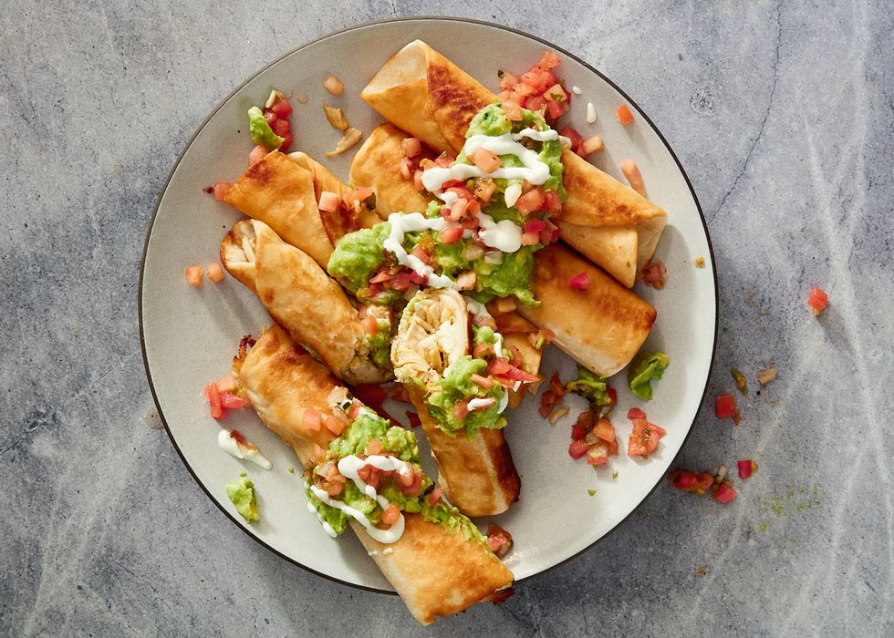

Recipes

Classic Chicken-Flauta with Avocado Cream
Preparing a chicken flautas with avocado cream and a lot more of ingredients.
Ingredients:
- Vegetable or canola oil, for frying
- 1 tablespoon butter
- 1/2 small red onion, diced
- 1 jalapeno, diced
- 1 garlic clove, minced
- 1 teaspoon ground cumin
- 1/2 teaspoon cayenne pepper 1 rotisserie chicken, skin removed and meat finely shredded
- 1 cup salsa
- 1/4 cup freshly chopped cilantro leaves
- 1 cup shredded Cheddar/Monterey jack blend
- 16 (5 to 6-inch) flour tortillas
- 2 cups shredded iceberg lettuce, for serving
Preparation Steps:
- Fill a large pot with enough oil to reach 2 inches up the side of the pan. Heat over medium heat until a deep-frying thermometer inserted in the oil reads 375 degrees F. To make the flautas: In a pan over medium heat melt butter and saute onions and jalapenos until tender, about 5 minutes. Add garlic, cumin, and cayenne pepper and cook until fragrant, another 2 minutes. Add chicken and salsa; stir to combine. Remove from heat and stir in cilantro, cheese and lime juice. Let cool slightly.
- Preheat oven to 200 degrees F.
- Working with 4 tortillas at a time, spread a heaping spoonful along the middle of each tortilla. Roll tortilla tightly around the filling and secure with a toothpick. Using tongs, hold each flauta in hot oil until firm, then release to continue cooking. Cook until golden brown, about 2 minutes, then remove to a paper towel-lined plate and immediately season with salt. Keep flautas warm in the oven on a sheet tray while assembling and cooking the remaining tortillas.
- To make the Avocado Cream: In a serving bowl, mash avocado, sour cream and lime juice until smooth. Season with salt, to taste.
- To serve, arrange flautas on a platter of shredded lettuce and serve with Avocado Cream on the side.